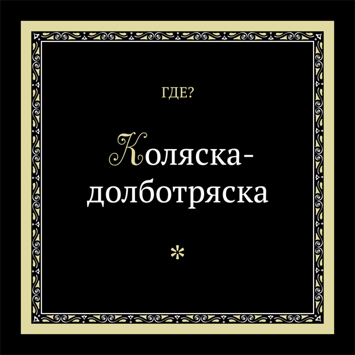

Юрий Шевченко · ГДЕ? · Коляска-долботряска
Изощрённая музыкально-поэтическая фенька
в духе нездорового приколизма.
Прощание с русским роком и самоироничное отражение
творческого одиночества группы
вне донбасского художественного контекста
в период 2002–2006 гг.

Юрий Шевченко:
тексты (2, 3, 6, 7, 9, 10 и 14, 12, 15, 16, 20 и 22, 21),
музыка (2, 3 [фантазия], 5, 7, 9, 10 и 14, 12, 16, 17, 20 и 22, 21),
вокал и декламация (везде, кроме *8, *15, 17),
аранжировки и запись вокала (везде, кроме *8, *15, *23),
сведение (везде, кроме *8, *15), дизайн и вёрстка обложки.
Руслан Гончаров:
тексты (3, 4, 6, 8, 11, 13, 20 и 22), музыка (4, 11, 13, 18), вокал (17), художественная концепция обложки.
Роман Дегтяренко — тексты (1, 3, 9, 16).
Антон Бессонов —
все работы (кроме текстов) над композициями *8 и *15.
Иоганн Себастьян Бах — прелюдия и фуга № 10 ми минор (1).
Неизвестный автор — «Кубинский танец» (3, прототип).
Фрэнк Синатра — «Somethin’ Stupid» (6).
Михайль Семенко — «Вагоновод» (текст).
Николай Гумилев — «Жираф» (текст).
Андрей Икрин — «Муха» (текст).
Испанец — «Колыбельная» (текст и музыка).
Русские рокеры — участники композиции *23.